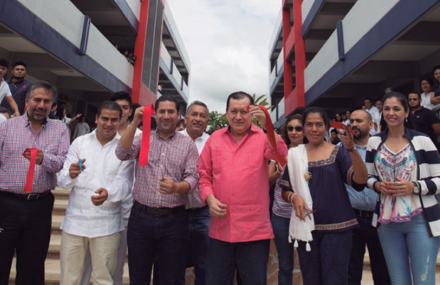

En el mes de febrero de 2020, participamos en el proyecto “Aldea Educativa” de la Feria de la Bandera Iguala 2020, para la difusión de la ciencia de forma lúdica y a favor de la ciudadanía de esta región.
Los días 16 y 17 de enero 2020, en la Facultad de Medicina Veterinaria y Zootecnia, se realizó el Curso teórico demostrativo “Tópicos selectos de Medicina General y reproducción en equinos y bovinos” con 70 asistentes y ponentes de alto nivel.
El día 5 de marzo de 2020 se festejó el VI aniversario del Campus Regional Zona Norte, con una jornada que estuvo de ponencias académicas y eventos deportivos y culturales; participaron 250 estudiantes. El día 13 se formó una Brigada Integral para brindar servicios médicos, odontológicos, Nutrición, Fisioterapia, Enfermería, Agronomía y Veterinaria a las comunidades del Pinzan Morado, Coyol, Cuajilote y Tepeguaje del municipal de Ajuchitlán del Progreso; la población beneficiada fue de 2000 personas.
Las escuelas preparatorias han tenido las siguientes participaciones académicas destacadas: las Preparatorias no. 3 y 20 participaron en la XXXIV olimpiada de matemáticas con 11 y 14 estudiantes, respectivamente, que accedieron a la fase regional; la Preparatoria no. 4, en del Día de la Mujer mexicana, realizó conversatorios sobre equidad de género, en colaboración con la Policía Estatal, en beneficio de 1428 estudiantes; la Preparatoria No. 29 participó con cuatro estudiantes en la disciplina de Atletismo en los juegos clasificatorios estatales, rumbo a Conadems y Condde 2020.
Se efectuó la Semana de la Salud en coordinación con la Jurisdicción Sanitaria 02 de la Secretaría de Salud Guerrero en beneficio de la comunidad estudiantil y de la población en general mayor de 25 años de la UAGro; se aplicaron estudios médicos preventivos y pláticas sobre la salud reproductiva. Se contaron 200 asistentes. Asimismo, se atiende permanentemente a 131 usuarios en planificación familiar; en colaboración con la Secretaria de salud y los Batallones de infantería 27 y 47 se benefició a 10 pacientes en la “Campaña de implantes” (Implanon NXT). Se llevó a cabo la Campaña de vacunación contra la Influenza en las instalaciones universitarias, teniendo como resultado la aplicación de 70 dosis a trabajadores y público en general. Se participó en la Brigada odontológica y orientación sobre la técnica de cepillado y donación de cepillos dentales a 356 niños de la Primaria “Vicente Guerrero Saldaña”, de Iguala. Se implementó el proyecto de Enfermería Escolar en las Preparatorias 32 y 8; tres egresados de enfermería brindaron servicio a 2500 estudiantes.
En el mes de enero se presentó el Proyecto para la integración de Red de Gestores de Vinculación con el propósito de coadyuvar a la articulación de la vinculación institucional en las escuelas de nivel superior, en la ex hacienda San Juan Bautista, con la participación de Directores y representantes de Escuelas Superiores de la Zona Norte.
En el marco de colaboración institucional entre la UAGro y el municipio de Iguala, se colaboró con la Dirección de Desarrollo Urbano, con jóvenes egresados de la Escuela Superior de Ciencias de la Tierra y el Programa Jóvenes Construyendo el Futuro, en el Proyecto de Regularización de Colonias de Iguala.
Durante el año 2019, en cumplimiento de los objetivos y metas de la UAGro, en la Coordinación General Zona Norte se implementaron las siguientes actividades:
Se establecieron los Convenios: de Colaboración Institucional con los municipios de Iguala, Taxco, Ajuchitlán y Teloloapan; y Específico con UNEME-CAPA y las Preparatorias de la Zona Norte, para reforzar el trabajo colaborativo entre los Departamentos Psicopedagógicos, las instituciones de salud y los programas federales en la atención de adicciones y fomento de la cultura de paz.
Se realizaron los eventos académicos: Conferencia “Cyberbullying y Delitos Cibernéticos”, en coordinación con los gobiernos estatal y municipal y la Policía Federal, en la Preparatoria No. 4; Curso taller Un mundo que envejece: Nuevas ideas de emprendimiento para afrontar el cambio, conjuntamente con la Escuela Superior de Enfermería No. 4, impartido por la maestra Paola Andrea Marín Carrillo, de la Universidad del Quindío, Colombia;
La Preparatoria No. 10 fue sede de la XXXIII Olimpiada Mexicana de Matemáticas, donde obtuvo el 7° lugar a nivel estatal; se realizó en el CRES-Zona Norte el “4º Foro de Estancias de Verano de Investigación Científica”, donde se presentaron trabajos de investigación realizados por estudiantes del campus; los estudiantes Maritza de la Paz Ortiz y José Francisco Juárez, de la Preparatoria No. 3, obtuvieron mención honorífica en la Feria Nacional de Ciencias e Ingenierías 2019, en Acapulco, Guerrero; estudiantes del Programa Educativo de Geología, participaron en el 1er Encuentro México- Ecuador entre Capítulos de Estudiantes de la Sociedad de Geología Económica (Society of Economic Geologist).
Se colaboró en las campañas: “Aldea Educativa” de la Feria a la Bandera 2019, donde las Escuelas Superiores de Ciencias de la Tierra y de Diseño y Arquitectura, el CRES-Zona Norte, la Facultad de Matemáticas-Altamirano y la Escuela Preparatoria No.10 se sumaron a la difusión de la ciencia en forma lúdica entre la ciudadanía de esta región; Campaña permanente de reforestación: Adopta un Árbol, con la meta de reforestar las escuelas de la UAGro en la Región Norte; asimismo, se organizó el Reciclatón Por un mundo sin contaminación, en las instalaciones de la Coordinación;
Formar profesionistas líderes, analíticos, críticos y creativos con visión estratégica y amplio sentido ético, capaces de diseñar, implementar y administrar infraestructura computacional para aportar soluciones innovadoras en beneficio de la sociedad; en un contexto global, multidisciplinario y sostenible.
La Clínica Universitaria Zona Norte brindó consultas médicas a 1000 personas: 960 estudiantes, 20 trabajadores y 20 de la población en general. Asimismo atendió permanentemente a 151 personas en planificación familiar.
Se creó la nueva Casa de Estudiantes “Dra. Arely Adriana Almazán Adame” para 25 estudiantes mujeres de escasos recursos
En la Preparatoria No. 20 se instaló un transformador eléctrico para la alimentación de aires acondicionados en beneficio de 536 estudiantes y 38 trabajadores

En agosto, se tuvo una destacada participación en representación de la UAGro, en la Feria del Café 2019, realizada en el Centro Citibanamex, de la Ciudad de México
En el Centro de Arte y Cultura de Iguala impartió Talleres Ordinarios de arte y cultura a jóvenes, niños y adultos de Iguala y pueblos vecinos. En noviembre, el Grupo Los Salgado participó en el CIX Aniversario de la Revolución Mexicana en la Ciudad de México; y el Ballet Folclórico Itzi-Guare, asistió a la Telesecundaria 024 “Benemérito de las Américas”, de Ejido Hidalgo Novillero, Mapastepec, Chiapas.
Escuela Preparatoria No. 3. Se realizó el equipamiento de la biblioteca con mobiliario, equipo de cómputo y colocación de herrería, además del Suministro, colocación e instalación de una subestación eléctrica de 150 KVA y circuitos alimentadores con una inversión de 1 millón 100 mil pesos; mediante donaciones de ex alumnos se adquirieron 10 computadoras, 4 aires acondicionados y cortinas para la sala de juntas. Se benefician 670 integrantes de la comunidad.
Escuela Preparatoria No. 10. En noviembre de 2018 se participó como sede de la XXXIII Olimpiada Mexicana de Matemáticas y del Taller del Programa de Escuela Segura. Se gestionaron Becas alimenticias permanentes a 40 estudiantes de bajos recursos.
Escuela Preparatoria No. 28. Se realizó un convenio con el área de Prevención del Delito del municipio de Cocula, donde 279 estudiantes resultaron beneficiados. Se participó, con 69 estudiantes, en la Feria del Emprendedor convocada por el Ayuntamiento de Cocula; se presentaron 13 proyectos de impacto regional y estatal.

Escuela Preparatoria No. 32. Se participó en el programa ECO-RETO para la recuperación y reciclaje de envases y empaques de PET, PEAD, PEBD, BOPP, Aluminio y Hojalata en escuelas públicas y privadas. Se ingresó al nivel IV del PCSiNEMS.
Facultad de Ciencias Agropecuarias y Ambientales. Los días 17-19 de octubre del 2018 se realizó el 3er Simposio Nacional de Investigación Científica en Fitosanidad. Se certificaron por SENASICA las áreas productivas: Bovinos, extracción de leche, cerdos y conejos. También se participó como sede del Festival Internacional Ecológico 2018.

Campus Zona Norte. En septiembre de 2018 se realizó el “3er Coloquio de Estancias de Verano de Investigación”, donde se presentaron trabajos de investigación realizados por estudiantes de la Licenciatura en Nutrición y Ciencias de los Alimentos y de la Licenciatura en Fisioterapia.
Escuela Superior de Diseño y Arquitectura. En noviembre de 2018, en el marco de su 18 Aniversario, se realizó la “Expo ESDA”, en Taxco.
Atención a Estudiantes. Se apoyó el registro de toda la población estudiantil en la Beca Universal Benito Juárez para Nivel Medio superior, en beneficio de las 12 Escuelas Preparatorias oficiales y siete Escuelas Populares.
Se realizaron dos ferias vocacionales en las ciudades de Huitzuco y Taxco en coordinación con las autoridades educativas de ambos municipios, para promocionar la oferta educativa de nivel superior. Se gestionaron Becas Hospedaje para 150 estudiantes.
Extensión Universitaria. Se realizó una campaña y una ponencia en la Preparatoria No. 10, con personal de la Dirección de Salud Municipal de Iguala, sobre la importancia y consecuencias de la buena alimentación.
Del 17 al 21 de septiembre de 2018 se realizó la Semana Nacional de Salud de la Adolescencia, en la Escuela Preparatoria No. 32, en coordinación con la Secretaría de Salud estatal; se abordaron temas de carácter social, familiar y sexual, en beneficio de trabajadores y estudiantes de la Zona Norte.
Clínica Universitaria. Se realizaron brigadas médicas para detectar enfermedades entre la comunidad estudiantil; como resultado, se expidieron 11,709 Certificados Médicos. Se proporcionó consulta médica a 1400 pacientes: 1300 estudiantes y 100 personas del público en general
Se atiende permanentemente a 143 usuarios en Planificación Familiar, 110 del público en general y 33 de la comunidad universitaria.
Laboratorio Clínico. Se realizaron tomas de muestras y se expidieron certificados médicos para las inscripciones al ciclo escolar 2018-2019. Asimismo, este servicio también se ofreció a trabajadores de la UAGro y a usuarios externos. Se realizó un total de 11,709 análisis clínicos.
CeLEEX. Se mantiene una matrícula de 758 restudiantes: 180 pertenecientes a la UAGro y el resto a la población en general. Se desarrollan cursos de inglés en diferentes niveles y de preparación para los exámenes de certificación KET, PET, FCE y Cambridge, atendiendo a 938 usuarios.
A través de los Centros de Arte y Cultura de Iguala y Arcelia, se realizaron las siguientes actividades:

Participación del grupo de danza folklórica Itzi-Guare en las ciudades de Zacualpan y Huayacocotla, Veracruz en el importante Festival Nacional de Danza. Aproximadamente 2000 asistentes en ambas ciudades e intercambio cultural con más de 20 grupos artísticos de danza y música del país.
Del 10 al 14 de mayo de 2018, el grupo artístico Pentáfono realizó una gira en compañía del ballet folklórico Macuilxochitl Xochipilli de Iguala, Gro, al estado de Chihuahua, recorriendo ciudades como: Parral, Cd. Cuauhtémoc, y Madera. Aproximadamente 10,000 asistentes e intercambio cultural con más de 50 grupos artísticos de danza y música del país.
Educación Media Superior y Superior
Se realizó un recorrido por las cinco escuelas preparatorias de Tierra Caliente, para coadyuvar en la construcción de sus evidencias de cumplimiento de los indicadores necesarios para su promoción en el PBCSiNEMS, en su próxima evaluación.
En junio de 2017, la Escuela Superior de Ciencias de la Tierra fungió como sede del Congreso Nacional de la Enseñanza de la Geografía, realizado en la ciudad de Taxco de Alarcón.
Se realizó un ciclo de conferencias en la Escuela Superior de Ciencias Agropecuarias y Ambientales, en el marco de la XXIV Semana de la Ciencia; en este contexto se realizó el curso “Procesos de certificación y reconversión orgánica”.
En el año 2017 se impartieron las siguientes acciones formativas: en octubre el Curso “Estrategias y recursos para la acción tutorial”, en la ciudad de Tlapehuala, con la participación de 29 docentes; en noviembre el Curso sobre Salud Sexual en Adolescentes, dirigido a docentes de la Región Norte, en la sala de videoconferencias de la Coordinación General, con una asistencia de 27 docentes; y el Curso-taller “Adicciones: Riesgos Psicosociales y Psicosexuales”, en la Escuela Superior de Enfermería No. 4 en coordinación con la Secretaría de Salud.
Atención a Estudiantes
Se trabajó conjuntamente con las Escuelas Preparatorias No.10 y No. 32 para su participación en el Programa Beca-Talento, con 22 estudiantes beneficiados. Se realizaron dos ferias vocacionales en las ciudades de Huitzuco de los Figueroa y Taxco de Alarcón, en coordinación con las autoridades educativas de ambos municipios.
A través del Programa Becas Hospedaje se apoyó con recursos propios a 150 estudiantes, con literas, colchones, refrigeradores, estufas y mantenimiento permanente de instalaciones eléctricas, fontanería y seguridad; además de mobiliario y equipo de cómputo e impresión.
Clínica Universitaria Zona Norte
Se realizaron brigadas médicas para detectar enfermedades entre la comunidad estudiantil de las regiones Norte y Tierra Caliente; como resultado se expidieron 11 mil 647 Certificados Médicos.
Se realizaron 2 mil 173 consultas a pacientes universitarios y usuarios en general; asimismo, para detectar posibles casos de VIH/SIDA entre la comunidad de Iguala, en coordinación con la Secretaria de Salud, se realizaron 50 pruebas rápidas de VIH/SIDA.
Se impartieron 15 pláticas de temáticas variadas, en beneficio de 750 asistentes de la población en general.; se realizaron dos pláticas sobre “Métodos Anticonceptivos y Ovulación”, en las casas de estudiantes femeniles de la UAGro en Iguala.
Análisis Clínicos
Se realizaron análisis clínicos a la comunidad universitaria del nivel medio superior, superior y posgrado que se inscribió al ciclo escolar 2017-2018. Este servicio también se realizó a personal directivo, docente, administrativo y de intendencia en la zona norte y a usuarios externos. Se expidieron 11 mil 647 certificados médicos.
Vinculación
Se aplicaron 760 Encuestas sobre Educación Inclusiva a estudiantes de doce preparatorias y cinco licenciaturas. Se organizó la conferencia “El gen exitoso”, impartida por el motivador internacional Ricardo Perret, con una Asistencia de 215 estudiantes y docentes.
En agosto, se tuvo una destacada participación en representación de la UAGro, en la Feria del Café 2019, realizada en el Centro Citibanamex, de la Ciudad de México
En el Centro de Arte y Cultura de Iguala impartió Talleres Ordinarios de arte y cultura a jóvenes, niños y adultos de Iguala y pueblos vecinos. En noviembre, el Grupo Los Salgado participó en el CIX Aniversario de la Revolución Mexicana en la Ciudad de México; y el Ballet Folclórico Itzi-Guare, asistió a la Telesecundaria 024 “Benemérito de las Américas”, de Ejido Hidalgo Novillero, Mapastepec, Chiapas.
Centro de Arte y Cultura de Iguala
En los semestres febrero- julio 2017 y agosto 2017- enero 2018, se impartieron los talleres ordinarios de Danza, Piano y Teclado, Dibujo y Pintura Infantil y Juvenil, Coro, Canto y Violín, a 150 asistentes, entre estudiantes de la UAGro y público en general. En julio-agosto de 2017, se llevaron a cabo talleres de arte y cultura para la población de Iguala y pueblos vecinos, en las modalidades de Dibujo y Pintura Infantil y Juvenil; Piano y Teclado; Guitarra; Violín; y Danza Infantil.
Del 11 al 16 de septiembre de 2017 se organizó el 2º Festival Internacional del Folclor 2017, con la participación de grupos provenientes de Argentina y Perú, con una asistencia de más de 300 personas. Se realizó un maratón artístico para recolectar víveres en beneficio de los damnificados del sismo ocurrido el 19 de septiembre de 2017; el evento se llevó a cabo en la explanada municipal de Iguala, con la participación de grupos artísticos de este Centro de Arte y Cultura, de las Escuelas Preparatorias 10 y 32 y grupos externos locales de música y danza.
Centro de Arte y Cultura de Arcelia
Se participó en una muestra cultural, artesanal y pictórica, con el Ballet Folclórico “Coyolxauhqui” y el grupo musical “Alma Suriana”, en el VII Festival del Día del Guerrerense en Dallas Texas, Estados Unidos, en junio de 2017, ante 2 mil asistentes.
El 2 de septiembre de 2017 se realizó el evento “Segunda Aventura Literaria”, presentando dos nuevas obras que contienen poemas e historias regionales, ante 170 asistentes de este municipio. El 15 de septiembre de 2017, se participó en las Festividades por el Aniversario de la Independencia de México, en Las Vegas , Nevada, Estados Unidos, coordinado por la Federación de Guerrerenses Radicados en el Estado de Nevada, con 20 artistas entre expositores, el Ballet Folclórico “Coyolxauhqui” y el Conjunto de Música Regional “Alma Suriana”.
Contingencia Sísmica
Como respuesta a la contingencia generada por el sismo ocurrido el día 19 de septiembre de 2017, al día siguiente se constituyó el Comité de Apoyo Regional a los Damnificados, encabezado por el Coordinador General de la Zona Norte y compuesto por los coordinadores de área y directores de escuela. Como testigo de honor estuvo presente la M.C. Arely Adriana Almazán Adame, Directora General de Planeación y Evaluación Institucional. Se habilitó un centro de acopio en la explanada municipal de Iguala, atendido por estudiantes de las Escuelas Preparatorias No.10 y No.32.
El 21 de septiembre de 2017 salió la primera brigada hacia los municipios de Tepecoacuilco de Trujano y Atenango del Rio, para la distribución de bienes y personal de apoyo. El beneficio consistió en 2.5 toneladas de alimentos noperecederos, y media tonelada de ropa; participaron 15 estudiantes de Arquitectura especialistas en daños materiales y protección civil y 30 estudiantes de Geología especialistas en el uso de suelos.
En Tierra Caliente se habilitó como centro regional de acopio la Preparatoria No. 8; participaron en la recolección de víveres y ropa, las Escuelas Preparatorias No. 8, 18, 20, 37 y 39, y las Escuelas Superiores de Enfermería No. 5 y Veterinaria y Zootecnia No. 1.
Los días 22 y 23 de septiembre se facilitó el traslado de estudiantes y docentes de la Escuela Superior de Diseño y Arquitectura, para hacer la valoración de viviendas y edificios públicos en la comunidades de Tepecoacuilco, San Vicente Palapa, Tlaxmalac, Pololcingo, Huitzuco, Atenango del Rio y Copalillo; otras brigadas se dirigieron a Apanguito, San Gregorio, Chontalcuatlan, Pezuapa y San Antonio. Asimismo, estudiantes de la ES de Ciencias de la Tierra, se trasladaron a los municipio de Jojutla, Tetecala, Miacatlan, Tetlamatzingo, Xochicalco, Alpuyeca, Amacuzac, Zacatepec y Tlalquitenango, del estado de Morelos, para valorar las condiciones geológicas de dichos asentamientos afectados por el movimiento telúrico. El centro de acopio de la Coordinación Zona Norte recabo una tonelada de ropa y 3 toneladas de víveres, que se distribuyeron entre las comunidades más afectadas del municipio de Atenango del Rio.
Educación Media Superior
En la Zona Norte contamos con 10 de las 25 Preparatorias de la UAGro que ingresaron al Sistema Nacional de Bachillerato (SNB); de éstas 9 se encuentran en el Nivel IV y una en el Nivel III. Tenemos 320 docentes de nivel medio superior, de éstos 148 han cursado el Diplomado en Competencias Docentes, del PROFORDEMS, 26 están certificados y 53 más están en proceso de certificación. Asimismo, 8 directores de las Preparatorias están en el Diplomado en Competencias Directivas (PROFORDIR) y 3 están en proceso de certificación.
Tuvimos una destacada participación en el Diplomado: El Modelo Educativo en la práctica docente colegiada, organizado por Comisión General de Reforma Universitaria. 115 docentes concluyeron satisfactoriamente el diplomado.
Participamos en la organización y desarrollo de los siguientes eventos: II Encuentro Académico Regional Interpreparatoriano, concursaron 928 estudiantes, 820 en la etapa intraescolar y 108 en la etapa zonal; las preparatorias No. 8, 18 y 20 obtuvieron los mejores lugares. Segundo Encuentro Académico Estatal Interpreparatoriano, concursaron 9 estudiantes y la Preparatoria No 18 obtuvo el 1er lugar en primer grado y la No. 8, el 2º lugar en 3er grado.
Asesoría técnico-pedagógica.
Se brindó apoyo a los responsables de los programas de Tutorías, Orientación Educativa, Trayectoria Escolar, Vida Saludable, Biblioteca Virtual de las escuelas de Educación Media Superior y Superior en las Regiones Norte y Tierra Caliente. Asimismo se promovió la participación de los estudiantes en los programas federales de Jóvenes Emprendedores y Construye-T, en coordinación con dependencias oficiales externas.
Educación Superior.
Para contribuir a la mejora continua de los procesos académicos en este nivel educativo, durante este período, se implementaron las siguientes acciones:
Se inició el Programa Educativo de la Licenciatura en Fisioterapia en el Centro Regional de Educación Superior (CRES) Zona Norte, Campus Taxco el Viejo, con una matrícula inicial de 55 alumnos, que se suma al PE de la Licenciatura en Nutrición y Ciencias de los Alimentos; y se atiende a 195 jóvenes provenientes de diferentes regiones del estado. El edificio que albergará los dos PE se encuentra en un 75% de su construcción.
Durante septiembre se evaluaron, por parte de los Comités Interinstitucionales para la evaluación de la Educación Superior (CIEES), 3 Programas Educativos de Licenciatura: Ingeniero Agrónomo, Ingeniero en Agroecología y Médico Veterinario Zootecnista.
Se realizó el Primer Coloquio de Investigación del PE de Nutrición y Ciencias de los Alimentos en el Campus Taxco el Viejo, donde 11 estudiantes presentaron los trabajos de sus estancias en otras instituciones del país, en el Verano de la Investigación 2016.
La Facultad de Ciencias Agropecuarias y Ambientales logró la certificación de dos procesos: la Unidad de Producción Porcina y Extracción de Leche y Manejo de Hato Bovinos, por el Servicio Nacional de Sanidad, Inocuidad y Calidad Agroalimentaria (SENASICA). Asimismo, entre febrero y septiembre, esta Facultad impartió a productores, profesionistas y alumnos los cursos-talleres “Producción de hortalizas y frutales” y “Control biológico de plagas agrícolas y sistemas de gestión para la producción primaria de alimentos”.
A través de la Coordinación de Asuntos de Género y el Área de Proyectos Especiales “Universidad Saludable”, se impartió a los Directores y Coordinadores de Educación Superior el Taller de Sensibilización y Derechos Humanos en la diversidad de grupos coexistentes en la Universidad, Región Norte.
En beneficio de 105 moradores de casas de estudiantes, desarrollamos un programa de mantenimiento preventivo y correctivo (instalaciones eléctricas, fontanería y seguridad); también se les dotó de muebles (mesas y sillas), material de limpieza, enseres domésticos y una desbrozadora a la Casa de Estudiantes “Dr. Ascencio Villegas Arrizón” de Cd. Altamirano.

En agosto, se tuvo una destacada participación en representación de la UAGro, en la Feria del Café 2019, realizada en el Centro Citibanamex, de la Ciudad de México
En el Centro de Arte y Cultura de Iguala impartió Talleres Ordinarios de arte y cultura a jóvenes, niños y adultos de Iguala y pueblos vecinos. En noviembre, el Grupo Los Salgado participó en el CIX Aniversario de la Revolución Mexicana en la Ciudad de México; y el Ballet Folclórico Itzi-Guare, asistió a la Telesecundaria 024 “Benemérito de las Américas”, de Ejido Hidalgo Novillero, Mapastepec, Chiapas.
Para el ciclo escolar 2016-2017, se aplicó el examen del Centro Nacional de Evaluación (CENEVAL) a un total de 4762 aspirantes (3358 de Educación Media Superior y 1384 de Educación Superior).
Administración Escolar.
En el presente ciclo escolar ingresaron 3934 estudiantes: 3102 a Educación Media Superior y 832 a Educación Superior; en el periodo de clausuras se entregaron 1839 certificados de estudios de Educación Media Superior (1740 Preparatorias oficiales y 199 Preparatorias populares) y 110 de Educación Superior.
Servicio social.
En coordinación con la Secretaria de Salud, se asignaron 194 lugares de campos clínicos a las Escuelas de Enfermería No. 4 y 5, distribuidos en Secretaría de Salud (SS), Instituto Mexicano del Seguro Social (IMSS), Instituto de Seguridad Social al Servicio de los Trabajadores del Estado (ISSSTE), Hospitales Generales y Militares en el estado de Guerrero y en otras entidades del país. Por otra parte, se otorgaron 66 plazas, para la realización del Servicio Social y se entregaron 245 constancias de término del mismo.
Clínica Universitaria Zona Norte.
Para contribuir al mejoramiento de la salud en la población estudiantil, se organizaron Brigadas Médicas, que realizaron toma de signos vitales, somatometría, destroxtis, aplicación de medicamentos, curaciones y pruebas psicológicas. Asimismo, se atendió a la siguiente población: 1583 pacientes y 182 usuarios de Planificación Familiar en Iguala; 2232 pacientes en Taxco; de estos a 1866 se les aplicó una prueba psicológica. De igual manera, se expidieron 9939 certificados médicos en iguala y 2651 en Taxco; y se brindó asesoría, actualización, formación y colaboración médica mediante 15 pláticas en beneficio de 750 asistentes.
Servicio Odontológico.
Se atendieron 2814 pacientes, entre trabajadores universitarios, estudiantes y población en general.
Laboratorio de Análisis Clínicos.
Se realizaron 8,600 muestras sanguíneas para la prueba V.D.R.L.; 1, 320 químicas sanguíneas; y 935 pruebas de grupos sanguíneos y Factor RH, a infantes que ingresaron a las diferentes guarderías de la ciudad de Iguala.
Deportes y recreación
En la ciudad de Chilpancingo, participamos en la Copa Dr. Javier Saldaña Almazán, en las disciplinas de voleibol y basquetbol con la asistencia de las Escuelas de Enfermería No. 5, Matemáticas No. 2, Medicina Veterinaria No. 1 y las Preparatorias No. 10 y No. 4, se obtuvieron los siguientes premios en voleibol varonil: 1er lugar, Escuela de Matemáticas de Cd. Altamirano, y 2º lugar, Preparatoria No. 4 de Taxco.
Casa de la Cultura
Los grupos artísticos Itzi-Guare y Pentáfono se presentaron durante los festejos de la Feria a la Bandera Iguala 2016, en el Teatro del Pueblo, y en la conmemoración del Día Mundial del Ambiente, en el Parque Zoológico Zoochilpan de Chilpancingo.
También se realizaron presentaciones del Grupo Alfonso Salgado en eventos nacionales, entre los que destacan el Día Internacional de la Danza en la ciudad de Tepic, Nayarit; así como el XV Encuentro Nacional de Mariachi Tradicional, realizado en agosto del presente año, en la Ciudad de Guadalajara, Jalisco.
Por su parte, el ballet Folclórico Coyolxauqui y el grupo musical Alma Suriana, han llevado su arte regional a Dallas, Texas, E.U. en el marco del VI Festival del Día del Guerrerense; también en el XV Encuentro Nacional del Mariachi Tradicional, celebrado en Guadalajara Jalisco.
Centro de Lenguas Extranjeras (CELEEX).
Se atiende a una matrícula de 800 alumnos distribuidos en las modalidades de Inglés y Francés conversacional; en este período se obtuvo la acreditación como Centro de Preparación Oficial para Exámenes de Certificación de la Universidad de Cambridge.
Red UAGro
Para mejorar el servicio se incrementó el ancho de banda de 30 a 70 MB, se actualizaron los equipos de telecomunicaciones con tecnología de vanguardia que beneficia a las escuelas ubicadas en el municipio de Taxco de Alarcón, iniciamos el proceso de instalación y actualización de licencias Software de seguridad (Avast Bussiness Security) para brindar protección en equipos de trabajo de las escuelas y de la Coordinación General.
© Kevin Alexis Albarrán Verón